Урок 1: памятка по УТБ (2–3 мин) → плавление, теория и график → СР 20 мин в конце урока (2 варианта, 12 баллов). Урок 2: удельная теплота плавления, Q = λm, история, задачи 1–6, тест. Слайды плавления взяты из презентации 31.10 (до них не дошли).
Урок 1 · Перед СР
Памятка: уравнение теплового баланса
Q=cmΔtΔt — на сколько градусов изменилась температура
Qотд=Qполгорячее тело отдаёт столько, сколько получает холодное
Одна жидкость
θ=m1+m2m1t1+m2t2 — конечная температура смеси
План решения
Кто отдаёт, кто получает?
Записать Qотд и Qпол через cmΔt.
Приравнять и найти неизвестное.
Проверить: θ — между t1 и t2.
Помни
Масса 1 л воды — 1 кг. cводы=4200кг⋅∘CДж
Коротко, 2–3 минуты: что отдаёт, что получает, где конечная температура. Потом — к новой теме, СР в конце урока.
Плавление и кристаллизация
Почему лёд тает при 0 °C, а железо — только при 1539 °C? Куда «прячется» теплота?
Урок 1 · Вспоминаем
Агрегатные состояния и переходы между ними
СегодняПлавление и отвердевание (кристаллизация) — переходы между твёрдым и жидким состояниями. Молекулы те же — меняются их расположение и движение.
Красные стрелки — вещество получает энергию, синие — отдаёт.
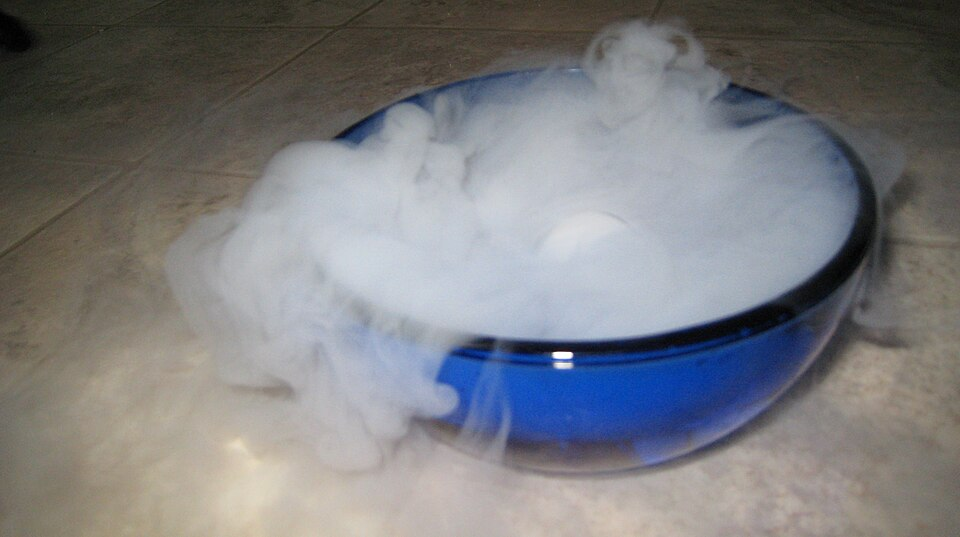
Сублимация: сухой лёд сразу превращается в газ
Сегодня — только переход «твёрдое ⇄ жидкое». Парообразование и конденсацию пройдём дальше; сублимация — для любопытных (сухой лёд на фото).
Урок 1 · Теория
Кристаллические и аморфные тела
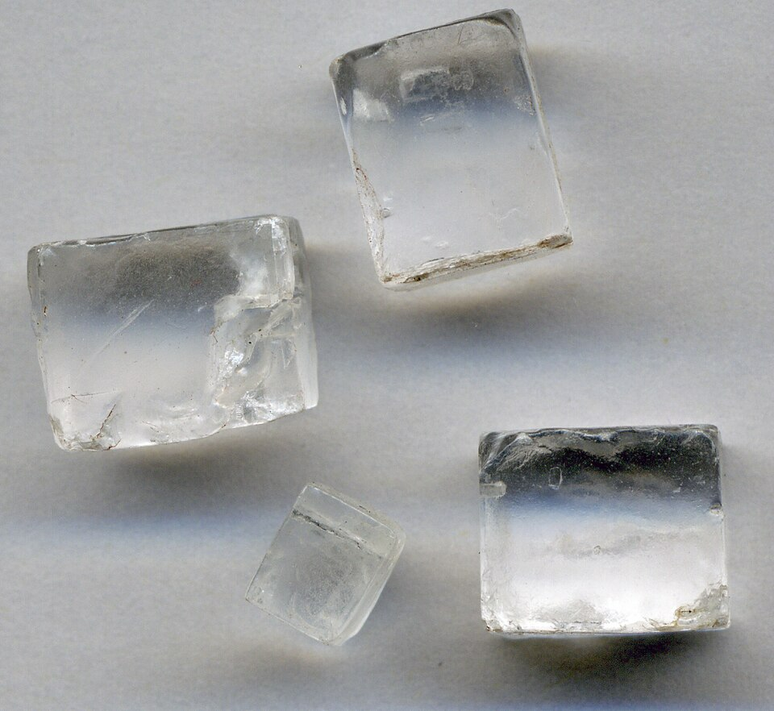
Кристаллы соли
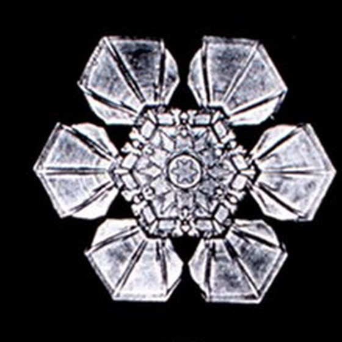
Снежинки (фото У. Бентли)
Кристаллические
• частицы стоят в строгом порядке — кристаллическая решётка; • правильная форма: кубики соли, шестиугольные снежинки; • есть определённая температура плавления. Примеры: лёд, соль, сахар, все металлы.
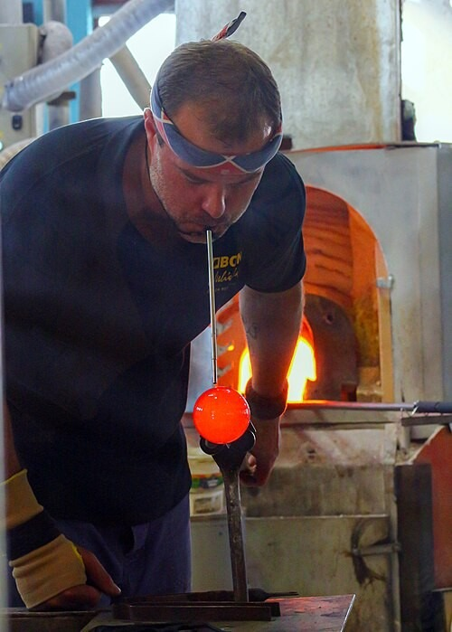
Стеклодув
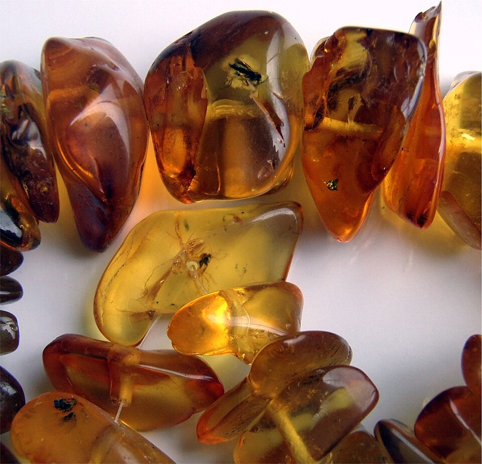
Янтарь
Аморфные
• частицы расположены беспорядочно, как в жидкости, но почти не перемещаются; • при нагревании постепенно размягчаются; • определённой температуры плавления нет. Примеры: стекло, смола, янтарь, пластмассы.
Бентли (1865–1931), фермер из штата Вермонт, первым сфотографировал снежинку 15 января 1885 г.; Кеплер — трактат «О шестиугольных снежинках», 1611.
Урок 1 · Теория
Плавление и отвердевание (кристаллизация)
ПлавлениеПлавление — переход вещества из твёрдого состояния в жидкое.
Отвердевание (кристаллизация)Отвердевание (кристаллизация) — переход вещества из жидкого состояния в твёрдое.
Температура плавленияТемпература плавленияtпл — температура, при которой кристаллическое вещество плавится. Отвердевает вещество при той же температуре: tотв=tпл.
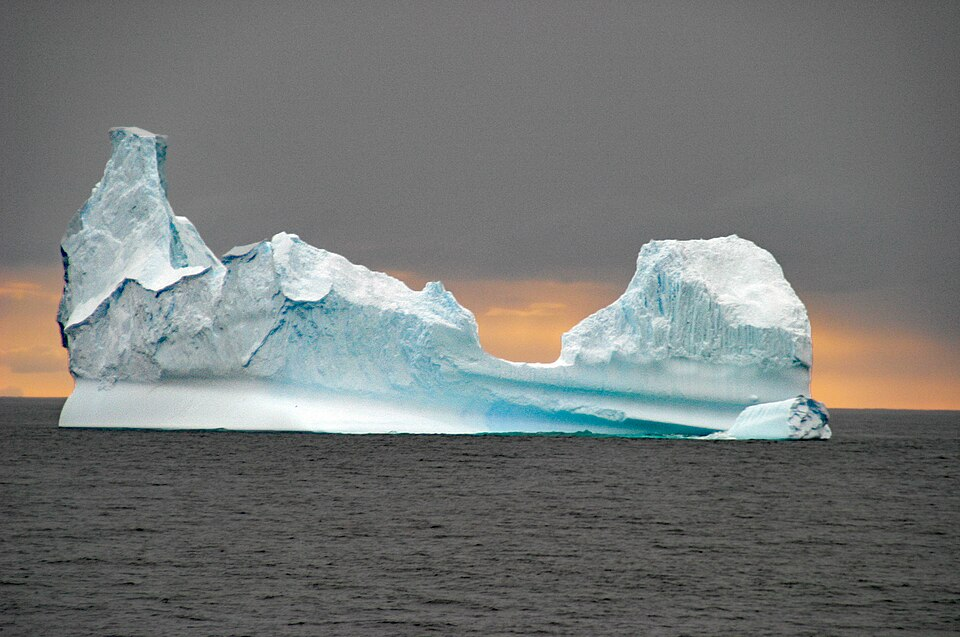
Айсберг тает: лёд получает энергию от воды и воздуха
Литьё: жидкий металл кристаллизуется и отдаёт энергию
Урок 1 · Справочник
Температура плавления веществ
Вещество
tпл, °C
Где это важно
Вольфрам
3387
нити ламп накаливания
Железо
1539
сталь и чугун плавят в печах
Медь
1085
провода; бронза для колоколов
Алюминий
660
банки переплавляют снова и снова
Свинец
327
рыболовные грузила
Олово
232
пайка, оловянные солдатики
Лёд
0
весной тает снег
Ртуть
−39
жидкий металл при комнатной температуре
Спирт
−114
замерзает только в сильный мороз
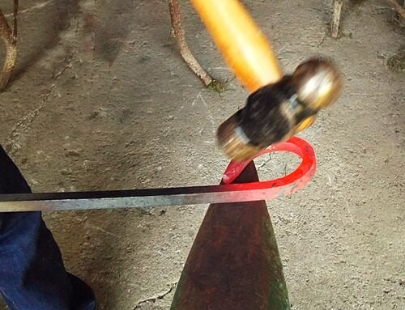
Кузнец и раскалённое железо
Кузнец нагревает железо до 1100–1200∘C: оно становится мягким, но не плавится — до 1539∘C ещё далеко.
Вольфрам плавится при температуре примерно в 10 раз выше, чем свинец (3387 : 327 ≈ 10). Кузнец нагревает железо до 1100–1200 °C: оно мягкое, но не плавится.
Урок 1 · Физика вокруг
Температура плавления в науке и технике
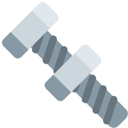
Галлий: 29,8∘C
Металл тает на ладони (тело 36,6∘C). Его существование в 1870 г. предсказал Д. И. Менделеев, открыли в 1875 г.
Вольфрам: 3387∘C
Нить лампы накаливания раскаляется до 2500–3000∘C. Вольфрамовую нить одним из первых предложил А. Н. Лодыгин.
Припой: около 183∘C
Сплав олова и свинца (ПОС-61) плавится ниже, чем олово (232) и свинец (327) по отдельности. Паяльник — около 300∘C.
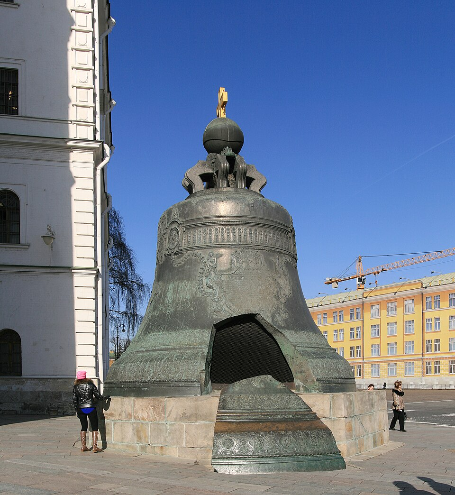
Царь-колокол
В 1735 г. мастера Моторины отлили из бронзы колокол массой около 200 т. Бронзу плавили при 1000∘C и выше.
Галлий открыл Лекок де Буабодран в 1875 г.; Менделеев предсказал его в 1870 г. как «экаалюминий». Припой ПОС-61 (олово 61 %, свинец 39 %) плавится при 183–190 °C. Царь-колокол отлит в 1735 г. мастерами И. Ф. и М. И. Моториными, масса около 200 т.
Урок 1 · Смотрим
Лёд нагревается и плавится: что происходит
Анимация: 1 кг льда при −40∘C, плитка каждую минуту даёт 42 кДж
Плитка работает всё время, а термометр 8 минут показывает 0∘C!
Твёрдое
Частицы колеблются около своих мест в решётке. Получая энергию, колеблются сильнее — температура растёт.
Плавление
При 0∘C колебания так сильны, что соседи не удерживают частицы: решётка разрушается.
Жидкое
Порядка нет, частицы перемещаются. Энергия снова идёт на нагревание.
Анимация честная: 1 кг льда при −40 °C, плитка даёт 42 кДж в минуту. Нагревание льда 2 мин, плавление 340 000 : 42 000 ≈ 8,1 мин, нагревание воды до 40 °C — 4 мин.
Урок 1 · Опыт
Опыт на экране: нагреваем лёд сами
Включить плитку и смотреть, как строится график. Затем поменять массу льда (график плавления удлиняется вдвое при вдвое большей массе) и мощность плитки (всё идёт вдвое быстрее). Вопрос: от чего зависит длина горизонтального участка? (от массы льда и мощности плитки). Справа — модель: при плавлении частицы «отрываются» от решётки.
Урок 1 · Главное
График нагревания льда, плавления и нагревания воды
Участок
Что происходит
Энергия
АБ
лёд нагревается от −40 до 0∘C
получает
БВ
лёд плавится при 0∘C
получает
ВГ
вода нагревается
получает
БВ горизонтальный: пока лёд плавится, температура не меняется. ВГ положе АБ: у воды c вдвое больше, чем у льда. Если воду охлаждать — всё пойдёт в обратном порядке.
График совпадает с анимацией: А(0; −40), Б(2; 0), В(10,1; 0), Г(14,1; 40). ВГ положе АБ: у воды c вдвое больше, чем у льда.
Урок 1 · Объясняем
Почему при плавлении температура не меняется
ОбъяснениеТемпература тем выше, чем быстрее движутся частицы. Пока идёт плавление, вся получаемая энергия уходит на разрушение решётки — частицы «отрываются» от своих мест, преодолевая притяжение соседей. На ускорение частиц энергии не остаётся — температура не растёт, пока не расплавится всё тело.
Внутренняя энергия растётУ воды при 0∘C внутренняя энергия больше, чем у такого же количества льда при 0∘C: энергия «спряталась» в разрушенных связях.
При кристаллизации
Наоборот: частицы снова выстраиваются в решётку и отдают энергию. Температура не меняется, пока не затвердеет вся жидкость.
Урок 1 · Проверим себя
Самостоятельная работа · 20 минут
4 задачи на уравнение теплового баланса
формат «Дано | Решение»: сначала формулы, потом числа
единицы — при каждом числе
таблица c — в условии
Оценка
12 баллов: «5» — от 11, «4» — от 8, «3» — от 5.
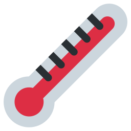
СР «Уравнение теплового баланса», 2 варианта, 12 баллов, 4 задачи: Q = cmΔt → смесь → «сколько долить» → теплоёмкость металла. Решения и критерии — в файле «УЧИТЕЛЮ».
Урок 2 · Удельная теплота плавления
Сколько энергии нужно, чтобы расплавить 1 кг вещества?
Урок 2 · Теория
Удельная теплота плавления
ОпределениеУдельная теплота плавленияλ («лямбда») — физическая величина, которая показывает, какое количество теплоты нужно сообщить 1 кг кристаллического вещества, взятого при температуре плавления, чтобы полностью превратить его в жидкость.
λ=mQ[λ]=кгДж
Смысл числа
λльда=3,4⋅105кгДж: чтобы расплавить 1 кг льда при 0∘C, нужно 340000 Дж — хватило бы нагреть 1 кг воды на 81∘C!
Вещество
λ, Дж/кг
Лёд
3,4⋅105
340000
Алюминий
3,9⋅105
390000
Железо
2,7⋅105
270000
Медь
2,1⋅105
210000
Олово
0,59⋅105
59000
Свинец
0,25⋅105
25000
У льда λ одна из самых больших — поэтому снег и лёд тают так долго.
340 000 : 4200 ≈ 81 °C. 10^5 = 100 000, поэтому 3,4 · 10^5 = 340 000.
Урок 2 · Главное
Количество теплоты при плавлении: Q=λm
Анимация: три кубика льда по 1 кг при 0∘C
Важно
Q=λm — только для тела, уже нагретого до температуры плавления.
Q=λmотсюда λ=mQ, m=λQ
КристаллизацияЗатвердевая при температуре плавления, жидкость выделяет столько же теплоты: Q=λm.
Грелка-«хлопушка»
Щелчок — раствор соли кристаллизуется и греет руки до ≈50∘C.
Грелка-«хлопушка»: внутри пересыщенный раствор ацетата натрия; щелчок металлической пластинки запускает кристаллизацию, и грелка нагревается примерно до 50 °C. Перезарядка — прокипятить в воде.
Урок 2 · История
Джозеф Блэк и «скрытая теплота»
Джозеф Блэк (1728–1799)
Шотландский физик и химик. Ввёл понятия теплоёмкости и скрытой теплоты.
1761
Блэк поставил в тёплую комнату колбу со льдом при 0∘C и колбу с ледяной водой. Вода за полчаса нагрелась на несколько градусов, а лёд таял около 10 часов — и всё время оставался при 0∘C.
Вывод
Лёд всё время получал теплоту, а термометр её «не видел». Блэк назвал её скрытой теплотой (лат. latens — скрытый). Сегодня это теплота плавления.
Проверим
1 кг льда при 0∘C и 1 кг воды при 80∘C: вода отдаст 4200⋅1⋅80=336000 Дж ≈λm — лёд почти весь растает, а смесь останется при 0∘C!
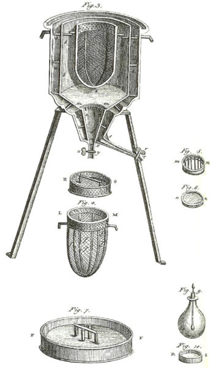
Ледяной калориметр Лавуазье и Лапласа (1782)
Опыт Блэка (около 1761 г.): две колбы — со льдом при 0 °C и с ледяной водой — в тёплой комнате. Вода прогрелась на несколько градусов за полчаса, лёд таял около 10 часов. Проверка: 4200 · 1 · 80 = 336 000 Дж ≈ 340 000 Дж.
Урок 2 · Задачи
Задача 1
1
Туристы взяли в поход 3 кг льда при 0∘C, чтобы охлаждать продукты. Сколько теплоты заберёт лёд, пока полностью растает?
Подсказка: λльда=340000 Дж/кг
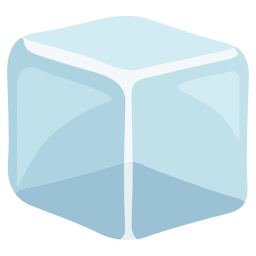
Дано:
m=3 кг
t=0∘C
λ=340000кгДж
Найти:
Q — ?
Решение:
Лёд уже при температуре плавления — сразу тает:
Q=λm
Q=340000кгДж⋅3кг=1020000Дж
Эту теплоту лёд забирает у продуктов и воздуха.
Ответ: Q=1020000 Дж ≈1 МДж
Урок 2 · Задачи
Задача 2
2
Из 1,5 кг расплавленной меди при температуре плавления отлили колокольчик. Сколько теплоты выделилось при отвердевании меди?
Подсказка: при кристаллизации выделяется Q=λm; λ меди — в таблице
Дано:
m=1,5 кг
λ=210000кгДж
Найти:
Q — ?
Решение:
При кристаллизации выделяется столько же, сколько нужно для плавления:
Q=λm
Q=210000кгДж⋅1,5кг=315000Дж
Ответ: Q=315000 Дж =315 кДж
Урок 2 · Задачи
Задача 3
3
Весеннее солнце за час передало сугробу 1,7 МДж теплоты. Снег уже был при 0∘C. Сколько килограммов снега растаяло?
Подсказка: 1 МДж =1000000 Дж; m=λQ
Дано:
Q=1,7МДж=1700000Дж
λ=340000кгДж
Найти:
m — ?
Решение:
Q=λm⇒m=λQ
m=340000кгДж1700000Дж=5кг
Ответ: m=5 кг
Урок 2 · Задачи
Задача 4
4
Чтобы расплавить 2 кг металла, взятого при температуре плавления, понадобилось 118 кДж теплоты. Найдите λ. Что это за металл?
Подсказка: λ=mQ, затем — таблица
Дано:
m=2 кг
Q=118кДж=118000Дж
Найти:
λ — ?
металл — ?
Решение:
λ=mQ
λ=2кг118000Дж=59000кгДж
59000=0,59⋅105 — по таблице это олово.
Ответ: λ=59000 Дж/кг — олово
Урок 2 · Задачи
Задача 5: читаем график
5
Стакан с 0,5 кг воды поставили в морозилку. График показывает, как менялась температура. а) Какой процесс на участке БВ? При какой температуре? б) Сколько минут он длился? в) В каком состоянии вода на 5-й, 30-й и 53-й минуте? г) ★ Сколько теплоты выделилось на участке БВ?
Ответ: а) кристаллизация (отвердевание) при 0 °C; б) 40 мин; в) 5-я мин — жидкое, 30-я — жидкое и твёрдое, 53-я — твёрдое; г) Q = λm = 340 000 · 0,5 = 170 000 Дж выделилось. ВГ круче АБ: у льда c вдвое меньше.
Урок 2 · Задачи
Задача 6
6
★ Кубики льда общей массой 300 г достали из морозилки (−18∘C). Сколько теплоты нужно, чтобы нагреть их до 0∘C и полностью растопить? Какая часть теплоты уходит на плавление?
Подсказка: два этапа: Q1=cлm(0−t), Q2=λm; cл=2100 Дж/(кг · °C)
Дано:
m=300г=0,3кг
t=−18∘C
tпл=0∘C
cл=2100кг⋅∘CДж
λ=340000кгДж
Найти:
Q — ?
Решение:
Q1=cлm(tпл−t)=2100кг⋅∘CДж⋅0,3кг⋅18∘C=11340Дж
Q2=λm=340000кгДж⋅0,3кг=102000Дж
Q=Q1+Q2=113340Дж≈113кДж
На плавление: 113340102000≈0,9 — это 90%.
Ответ: Q≈113 кДж; 90% — на плавление
Урок 2 · Тест
Тест: проверим себя
1
Плавление — это переход вещества…
А) из твёрдого в жидкоеБ) из жидкого в твёрдоеВ) из жидкого в газ
2
Какое из этих тел — аморфное?
А) лёдБ) сольВ) янтарьГ) медь
3
Свинец плавится при 327∘C. Он отвердевает при…
А)0∘CБ)232∘CВ)327∘C
4
Пока лёд плавится, его температура…
А) растётБ) не меняетсяВ) падает
5
Единица удельной теплоты плавления —
А) ДжБ) Дж/кгВ) Дж/(кг · °C)Г) °C
6
Расплавить 4 кг свинца при tпл (λ=25000 Дж/кг) стоит…
РешитьЛисток «ДЗ от 31.10 — Тепловой баланс и плавление» (он уже у вас): № 7–12, № 13★ — по желанию.
Опыт дома
Налейте воду в формочку для льда и поставьте в морозилку. Каждые 15 минут записывайте, что видите: когда появился первый лёд, когда вода замёрзла полностью. Почему вода так долго «стоит» при 0∘C?
Все материалы
Презентация и листки — на странице класса «Как здорово! 8 класс».
Источники
Фотографии
• In-stream inoculation addition while molten cast iron is poured to a green sand mold in a foundry in Bangladesh.jpg — Sm faysal, CC BY-SA 4.0
• Dry Ice Sublimation 1.jpg — Christopher from Salem, OR, USA, CC BY-SA 2.0
• Halite crystals (four).jpg — James St. John, CC BY 2.0
• SnowflakesWilsonBentley.jpg (фрагмент) — Wilson Bentley, Public domain
• Стеклодув — VitVit, CC BY-SA 4.0, commons: File:Nov%C3%BD_Bor_Art_Glass_v%C3%BDroba_4.jpg
• Insects in amber necklace.jpg — Brocken Inaglory, CC BY-SA 3.0
• .00 1008 Iceberg in Antarctica.jpg — W. Bulach, CC BY-SA 4.0
• Кузнец — David Whelan, CC0, commons: File:Blacksmith_hammering_iron_(29901113240).jpg
• MoscowKremlin TsarBell.jpg — Ludvig14, CC BY-SA 3.0
• Professor-joseph-black-1728-1799-chemist cropped.jpg — David Martin, CC BY-SA 4.0
• Ice-calorimeter.jpg — Sadi Carnot (en.wikipedia), Public domain
• Иконки — Twemoji (CC BY 4.0). Анимации и интерактивы — собственные.
Управление →ПробелPageDown — дальше (сначала открываются решения), ← — назад · клик по слайду — дальше, по левому краю — назад P перо · M маркер · E ластик · Esc указатель · Ctrl+Z отменить · C стереть слайд B чистая доска · O все слайды · N заметки учителя · F во весь экран · номер + Enter — перейти
Рисунки сохраняются в этом браузере отдельно для каждого слайда.